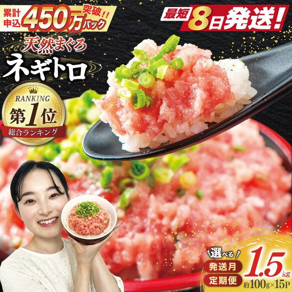
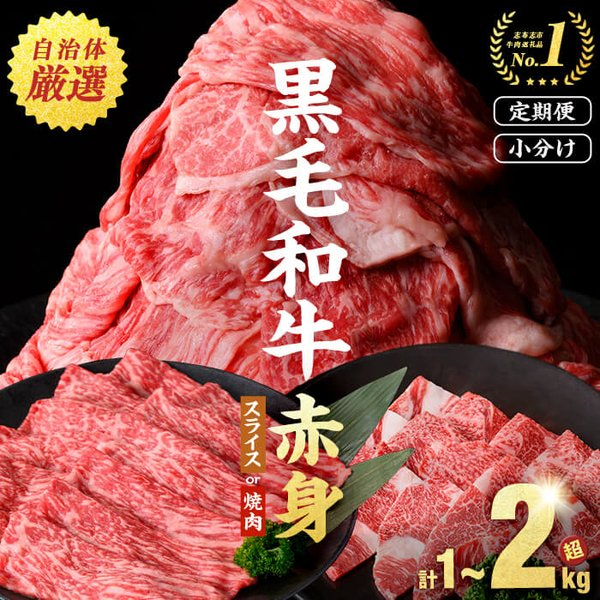
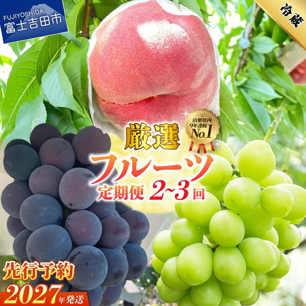
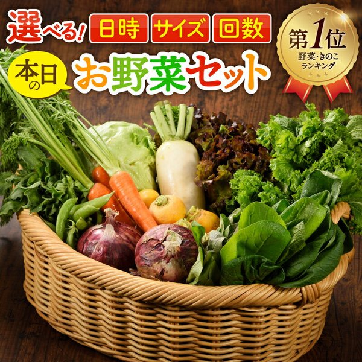
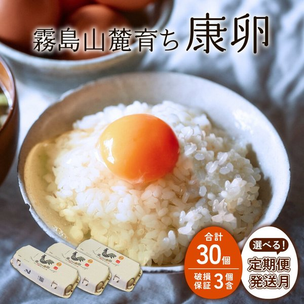
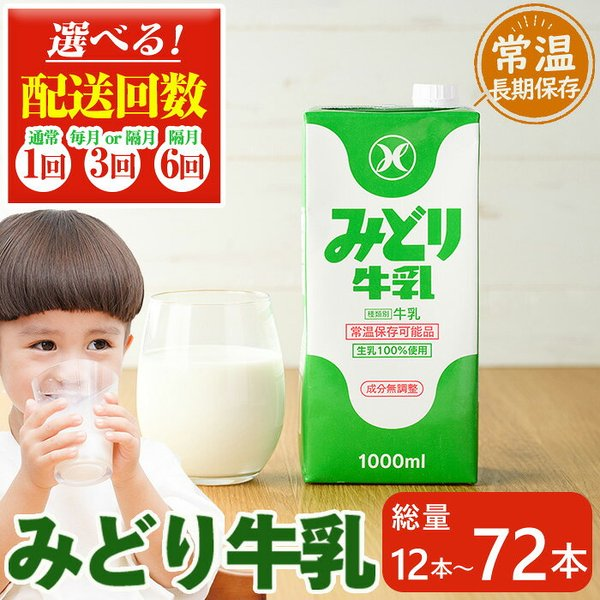
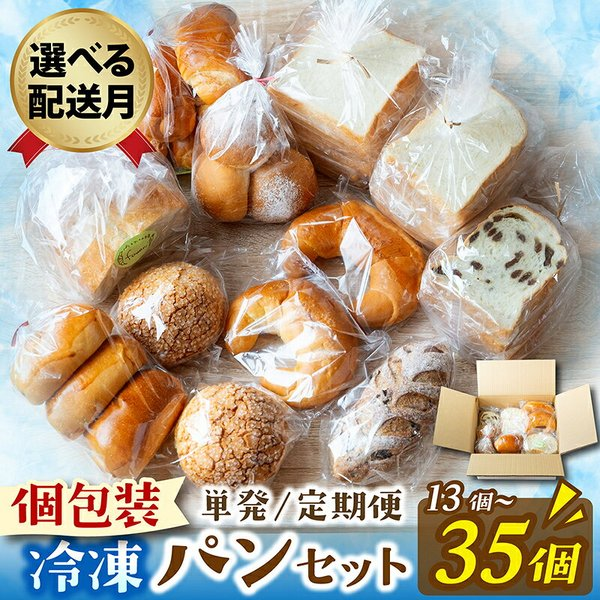
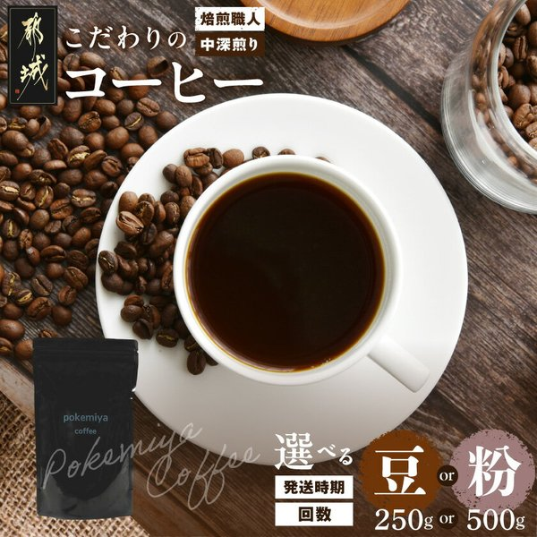
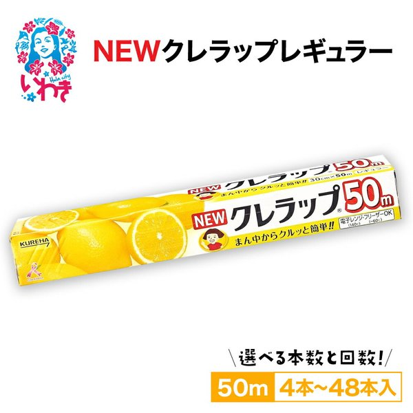

【2026年ふるさと納税】冷凍庫がパンパンにならない！お米・お肉・フルーツ・日用品の人気「定期便」返礼品おすすめ10選
ふるさと納税で失敗しやすいのは、寄附したあとに「置き場所がない」「食べきれない」となることです。とくに冷凍の返礼品は、届いた日に冷凍庫があふれてしまうことがあります。
そこで注目したいのが定期便です。1回の寄附で数回に分けて届くため、冷凍庫や冷蔵庫の空きに合わせて受け取れます。選ぶ軸は、毎回同じように使うものか、日持ちするか、そして回数を選べるかの3つです。お米や牛乳、卵のように毎週必ず使うものは、買い物の回数そのものを減らせます。ラップなどの日用品は、収納場所さえ決めておけば、買い足しの手間が消えます。果物やパンのように内容が変わるものは、届く月を選べる返礼品にすると、食べきれる量で受け取れます。返礼品は寄附額の3割以下が目安と決まっているため、回数が増えるほど1回あたりの量は少なくなります。総量と回数のバランスを見て、自分の生活に合うものを選んでください。
本記事では、楽天市場で人気・高評価の定期便の返礼品10選を、寄附額とレビュー評価つきで写真付き紹介します。
- おすすめ10選 スペック・特徴比較表
- BEST 1｜新米 さがびより 精米・無洗米 定期便（5kg〜20kg・発送月と回数を選択）
- BEST 2｜天然まぐろ使用 ねぎとろ 100g×15袋（1回・3回・6回から選択）
- BEST 3｜鹿児島県産 黒毛和牛 赤身 モモ・ウデ 計1kg〜2.1kg（スライス・焼肉／定期便全3回）
- BEST 4｜2027年先行予約 フルーツ定期便（桃・シャインマスカット・黒ぶどう／2回・3回）
- BEST 5｜旬のおまかせ野菜セット（サイズ・お届け回数を選択／1回〜12回）
- BEST 6｜霧島山麓育ち こだわり卵 康卵 計30個（27個＋割れ保証3個／定期便2・3・6・12回）
- BEST 7｜みどり牛乳 定期便（計12L・36L・72L／毎月・隔月から選択）
- BEST 8｜個包装 冷凍パン詰め合わせ（10種13〜35個入／配送月を選択）
- BEST 9｜焙煎職人こだわりのコーヒー 中深煎り（豆・粉250g/500g／お届け回数選択）
- BEST 10｜NEWクレラップ レギュラー 30cm×50m（4本〜30本・定期便2〜12回）
- 【読者負担0円】買わなくても得する無料サービス
- まとめ：ふるさと納税の定期便返礼品10選の選び方
| 順位 | 商品名 | ブランド | 最大の特徴・おすすめ理由 | 総合評価 |
|---|---|---|---|---|
| BEST 1 | 新米 さがびより 精米・無洗米 定期便（5kg〜20kg・発送月と回数を選択） | 佐賀県上峰町 | 精米・無洗米を選べる | 4.64 |
| BEST 2 | 天然まぐろ使用 ねぎとろ 100g×15袋（1回・3回・6回から選択） | 静岡県吉田町 | 100g×15袋の小分け | 4.76 |
| BEST 3 | 鹿児島県産 黒毛和牛 赤身 モモ・ウデ 計1kg〜2.1kg（スライス・焼肉／定期便全3回） | 鹿児島県志布志市 | 赤身中心で脂が重くない | 4.59 |
| BEST 4 | 2027年先行予約 フルーツ定期便（桃・シャインマスカット・黒ぶどう／2回・3回） | 山梨県富士吉田市 | 桃・シャインマスカット・黒ぶどうの詰め合わせ | 4.67 |
| BEST 5 | 旬のおまかせ野菜セット（サイズ・お届け回数を選択／1回〜12回） | 宮崎県綾町 | サイズと回数を選べる | 4.54 |
| BEST 6 | 霧島山麓育ち こだわり卵 康卵 計30個（27個＋割れ保証3個／定期便2・3・6・12回） | 宮崎県えびの市 | 割れ保証3個付き | 4.71 |
| BEST 7 | みどり牛乳 定期便（計12L・36L・72L／毎月・隔月から選択） | 大分県佐伯市 | 常温で長期保存できる | 4.51 |
| BEST 8 | 個包装 冷凍パン詰め合わせ（10種13〜35個入／配送月を選択） | 滋賀県大津市 | 10種類のパンが個包装で届く | 4.79 |
| BEST 9 | 焙煎職人こだわりのコーヒー 中深煎り（豆・粉250g/500g／お届け回数選択） | 宮崎県都城市 | 挽き方・量・回数を選べる | 4.70 |
| BEST 10 | NEWクレラップ レギュラー 30cm×50m（4本〜30本・定期便2〜12回） | 福島県いわき市 | 30cm×50mの標準サイズ | 4.81 |
新米 さがびより 精米・無洗米 定期便（5kg〜20kg・発送月と回数を選択）

佐賀県上峰町の返礼品で、特A評価を16年連続で取っている「さがびより」を単一米で届けます。精米と無洗米を選べ、5kgから20kgまで容量を変更できるので、家族の人数に合わせて無駄なく受け取れます。定期便は発送月と回数を選べるため、新米の時期にまとめて届いて置き場所に困る、という事態を避けられます。炊き上がりは粒が立ち、冷めても甘みが残るので、お弁当にも向いています。寄附額は約4,600円（2026年11月時点）。
- 精米・無洗米を選べる
- 5kg〜20kgと容量を変更できる
- 発送月と回数を選べる定期便
- 回数分の寄附額になるので、まずは1回か3回から始める
天然まぐろ使用 ねぎとろ 100g×15袋（1回・3回・6回から選択）

静岡県吉田町の返礼品で、天然まぐろを使ったねぎとろを100gずつ15袋に小分けしたもの。1袋が1〜2人前なので、解凍するのは食べる分だけですみます。ご飯にのせるだけでなく、手巻きずしやあえ物にも使えるので、年末年始に人が集まる日にも出せます。1回・3回・6回から発送回数を選べ、冷凍庫の空きに合わせて受け取れます。寄附額は約9,700円（2026年11月時点）。
- 100g×15袋の小分け
- 天然まぐろ使用
- 1回から選べるので冷凍庫に合わせやすい
- 解凍後は当日中に食べ切る前提で、必要な袋だけ出す
鹿児島県産 黒毛和牛 赤身 モモ・ウデ 計1kg〜2.1kg（スライス・焼肉／定期便全3回）

鹿児島県産の黒毛和牛を、赤身のモモとウデで届ける返礼品。スライスと焼肉用を選べ、合計1kgから2.1kgまで調整できます。定期便は全3回で、1回あたりの量が抑えられるため、冷凍庫がいっぱいになりません。赤身は脂がしつこくなく、すき焼きよりも、しゃぶしゃぶや焼き肉で肉の味を楽しみたい人に向いています。寄附額は約15,000円（2026年11月時点）。
- 赤身中心で脂が重くない
- スライス・焼肉用を選べる
- 全3回の定期便で1回の量を抑えられる
- 3回分の寄附額になるため、年間の上限額を先に確認しておく
2027年先行予約 フルーツ定期便（桃・シャインマスカット・黒ぶどう／2回・3回）

山梨県富士吉田市の返礼品で、旬のフルーツを2回または3回に分けて届けます。桃、シャインマスカット、黒ぶどうが入り、発送は2027年7月上旬から10月中旬まで順次です。1回あたりの量が箱で届くため、食べきれるペースで受け取れます。冷蔵で届くので、届いた日のうちに冷やしておけば、翌朝には食べごろになります。寄附額は約18,800円（2026年11月時点）。
- 桃・シャインマスカット・黒ぶどうの詰め合わせ
- 2回・3回から回数を選べる
- 2027年の先行予約枠
- 発送が2027年7〜10月なので、受け取り予定を手帳に入れておく
旬のおまかせ野菜セット（サイズ・お届け回数を選択／1回〜12回）

宮崎県綾町の返礼品で、その時季に採れた野菜を詰め合わせて届けます。サイズとお届け回数を選べ、1回のお試しから12回まで対応しています。着日を指定できるので、在宅の日に合わせて受け取れます。葉物、根菜、果菜がバランスよく入るため、献立を考える手間が減り、買い物に行く回数もその分だけ減ります。寄附額は約8,000円（2026年11月時点）。
- サイズと回数を選べる
- 着日指定ができる
- 1回のお試しから始められる
- 中身は旬のおまかせなので、苦手な野菜が届くこともある
霧島山麓育ち こだわり卵 康卵 計30個（27個＋割れ保証3個／定期便2・3・6・12回）

宮崎県えびの市の返礼品で、霧島山麓の養鶏場が育てた卵を30個届けます。27個に割れ保証の3個を足した内容で、配送中の割れが心配な人でも注文しやすいです。内容量と発送月を選べ、2回から12回までの定期便に対応しています。卵は毎週必ず使うものなので、届くたびに買い足す手間が消えるのがいちばんの利点です。寄附額は約5,400円（2026年11月時点）。
- 割れ保証3個付き
- 内容量・発送月を選べる
- 2回〜12回の定期便に対応
- 生卵なので、届いたらすぐに冷蔵庫の卵ケースへ移す
みどり牛乳 定期便（計12L・36L・72L／毎月・隔月から選択）

大分県佐伯市の返礼品で、九州乳業のみどり牛乳を常温で長期保存できるパックで届けます。計12L、36L、72Lから容量を選び、毎月3回・隔月3回・隔月6回などの回数を組み合わせられます。常温保存なので、冷蔵庫の場所を圧迫しません。災害時の備蓄としても使えるため、日常使いと備えを兼ねたい家に向いています。寄附額は約11,000円（2026年11月時点）。
- 常温で長期保存できる
- 12L〜72Lから容量を選べる
- 備蓄としても使える
- レビューは41件とまだ少なく、口コミはこれから増える段階
個包装 冷凍パン詰め合わせ（10種13〜35個入／配送月を選択）

滋賀県大津市の返礼品で、10種類のパンを個包装の冷凍で届けます。13個から35個までの内容量があり、配送月を選べるので、朝食が足りなくなる月に合わせて受け取れます。1個ずつ包装されているため、必要な分だけ自然解凍すればよく、食べきれずに傷める心配がありません。トーストすれば、焼きたてに近い食感が戻ります。寄附額は約10,000円（2026年11月時点）。
- 10種類のパンが個包装で届く
- 13〜35個から量を選べる
- 配送月を指定できる
- 冷凍庫のスペースを、届く前に確保しておく
焙煎職人こだわりのコーヒー 中深煎り（豆・粉250g/500g／お届け回数選択）

宮崎県都城市の返礼品で、焙煎したてのコーヒーをポスト投函で届けます。挽き方と量を選べ、お届け回数は10日以内・翌月・定期便5回・10回から選べます。中深煎りは、苦味と甘みのバランスがよく、ブラックでもミルクを入れても飲みやすい焙煎です。豆のままなら、飲む直前に挽くことで香りが立ちます。寄附額は約3,000円（2026年11月時点）。
- 挽き方・量・回数を選べる
- 焙煎したてをポスト投函で受け取れる
- 中深煎りで飲みやすい
- ポスト投函のため、届く日はポストを確認しておく
NEWクレラップ レギュラー 30cm×50m（4本〜30本・定期便2〜12回）

福島県いわき市の返礼品で、クレハのNEWクレラップ レギュラーを届けます。30cm×50mの標準サイズで、4本から30本まで本数を選べ、定期便は2回から12回まで対応しています。切り口がまっすぐ出るカット刃なので、毎日使ってもイライラしません。台所で必ず使う消耗品を、買い足さずに済む状態にできます。寄附額は約10,000円（2026年11月時点）。
- 30cm×50mの標準サイズ
- 4本〜30本から本数を選べる
- 2回〜12回の定期便に対応
- レビューは27件と少なく、口コミはこれから増える段階
この記事の商品を買う前に、まずは無料で得する選択肢をチェック。どれも登録・利用は0円で、無料期間中に解約すれば料金はかかりません。読みたい雑誌がある人、ポイントを貯めたい人、アンケートなら気軽という人、それぞれに合うものを選べます。
初回31日無料・無料期間中に解約すれば0円 → 楽天ポイントモール｜登録無料で毎日ポイ活
買い物なしでもポイントが貯まる無料サービス → 楽天インサイト｜アンケートに答えてポイント
登録無料・すきま時間のアンケートで貯まる → 楽天カード｜年会費永年無料
新規発行・年会費ずっと0円 →
4つのサービスの違いと使い分けは「出費0円で得する！買わずにポイントが貯まる無料サービス厳選4選」でまとめています。
💡 まとめ：ふるさと納税の定期便返礼品10選の選び方
定期便の返礼品は、1回の寄附で何度も届くぶん、生活のなかに「買い足さなくていい状態」をつくれます。まずはお米や卵、牛乳のように、毎週必ず使うものから選ぶと、効果を実感しやすいです。野菜や果物、パンは、届く月と回数を選べる返礼品にすると、食べきれずに傷める心配が減ります。日用品は、収納場所を決めてから寄附すると、届いた日に困りません。牛肉やねぎとろのような冷凍の返礼品は、冷凍庫の7割を上限に考えておくと安心です。定期便は回数分の寄附額になるため、1回だけの返礼品より総額が大きくなります。まずは1回のお試しから始めて、味が合ったら回数を増やす、という選び方がいちばん失敗しません。
楽天市場では「5と0のつく日」や「お買い物マラソン」などのキャンペーンに合わせて購入すると、ポイント還元が最大化してお得に手に入ります。ぜひチェックしてみてくださいね。